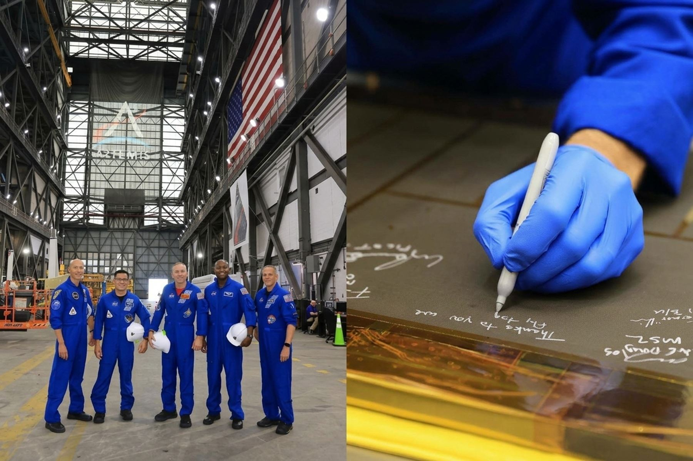

Artemis III: Astronautas firman piezas que estarán dentro de nave Orión en próxima misión

Los astronautas asignados a la histórica misión Artemis III protagonizaron un emotivo y significativo acto simbólico al firmar una de las piezas que formará parte de la estructura interna de la nave espacial Orión. Este componente específico estará presente dentro del vehículo durante su próximo vuelo programado en órbita terrestre baja, consolidando el vínculo directo entre la tripulación humana y la ingeniería que los transportará al espacio profundo.
La ceremonia de firma representa un hito tradicional pero profundamente emotivo en la preparación de las misiones tripuladas de la agencia espacial. Al estampar sus firmas en el hardware de vuelo, los astronautas dejan una huella literal y permanente en el sistema que garantizará su seguridad, soporte vital y habitabilidad durante las complejas fases de prueba y posterior ejecución de la misión lunar.
Un componente vital para la arquitectura de Artemis III
La nave espacial Orión es el vehículo de exploración diseñado para llevar a los astronautas más allá de la órbita terrestre baja, proporcionando soporte vital durante su travesía, al tiempo que facilita el acoplamiento y las operaciones necesarias para el alunizaje. La pieza que ahora lleva las firmas de la tripulación jugará un papel instrumental en los ensayos previos y en el comportamiento general de los sistemas internos de la nave.
La inclusión de las firmas de los astronautas en el hardware de la nave Orión destaca la estrecha colaboración entre los equipos de ingeniería de tierra y los comandantes y especialistas que tripularán el sistema en su inminente vuelo orbital.
El vuelo en órbita terrestre baja planificado para esta sección y su conjunto constituye una fase crucial de validación tecnológica. Los ingenieros y técnicos supervisan de manera exhaustiva cada subsistema, asegurando que todos los elementos mecánicos, eléctricos y de soporte cumplan con los rigurosos estándares requeridos para misiones tripuladas de larga duración.
El camino hacia el retorno lunar
La misión Artemis III se erige como uno de los objetivos más ambiciosos de la exploración espacial contemporánea, al tener como propósito fundamental el regreso de la humanidad a la superficie de la Luna. Cada componente firmado, probado y certificado bajo estrictos controles de calidad acerca a la comunidad internacional a la concreción de este objetivo científico e histórico.
Con este gesto simbólico de la tripulación plasmado en el interior de la nave Orión, los preparativos técnicos continúan su curso de manera sostenida. Las autoridades y los equipos técnicos seguirán ejecutando los protocolos de integración y pruebas en tierra, preparando el escenario para las siguientes fases operativas que definirán el futuro de la exploración tripulada en nuestro vecindario cósmico.